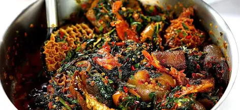

Efo riro is a simple to make yoruba delicacy. It requires minimal incgredients and a short number of steps to make. It used pepper, iru and the efo leaves as the base. Every other thing is an add on.
See, I told you, easy to make. Interesting story, I made it for the first time ever yesterday and I can say it is the best meal I have ever made. Just to show you it is quick and easy to make
Food is Ready!
Note: Ugwu (spinach) leaves can be used to replace Efo but it would not taste as good. Also rememeber not to use too much of the stock water as it will amke the soup too watery. Less is more!